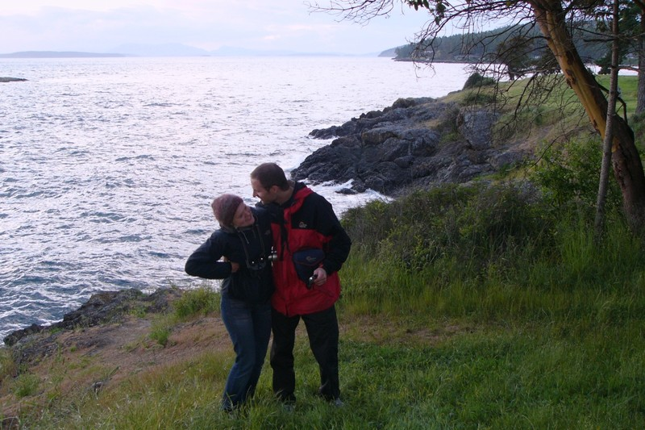
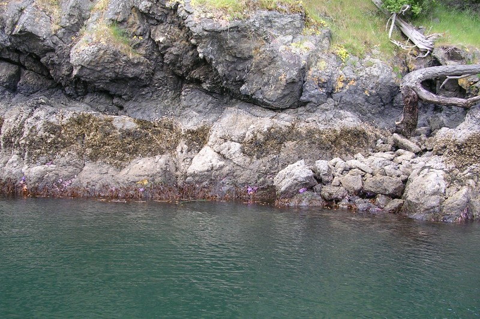
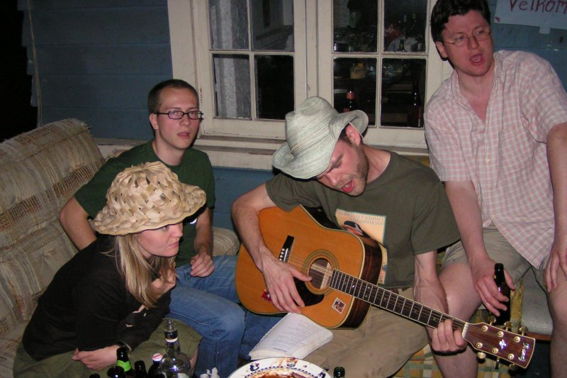

Við og í Kyrrahafinu
Gunni og Hafdís heimsækja Seattle og nágrenni, 15. til 30. maí 2005
(16)
Árbítur að hætti hússins
Einmitt, svo beygjum við til vinstri
Skál fyrir því
(17)
Hundrað ára sjálfstæði Norðmanna fagnað
Norskir ljósvíkingar í vígahug
Skipastiginn í Ballard
(18)
Háskólalóðin
Hænsnafótur í hádegismat
Mannlíf við þjóðveginn
(19)
Fisk- og hvalveiðiskipastóll Makah-indíána
Pönkarar
Ókei, bless bless
(20)

Vaknað í frumskóginum
(21)
Vafasamur mótelgestur
Skógar og högg í grennd við St. Helenu
(22)
Alpökur á beit, sumar- og vetrartískan
Lesið um náttúruna

Hæ gæs
Tjaldað við sjóinn

Góð mynd, fannst þér ekki?
Kvöldganga
(23)
Gakktu í bæinn
Nei sjáðu

Fjólubláir krossfiskar

Bláir froskmenn
Allir komu þeir aftur
Augljós einkenni kafaraveiki
Teboð norður í Enska kampi
Veislan flutt vestur á tjaldstæði

Kampavín og jarðarber
Sólarlag
(25)
Ferjan milli Vancouvereyju og meginlandsins
(27)
Pylsukóngurinn 2005
Við vitum nokkuð sem þú veist ekki...
...og elskum alla!
Partýið nær hámarki
Hey nú fékk ég hugmynd, sækjum gítarinn

Fast þeir sóttu sjóinn
Bratwurst við sólarupprás
(28)
Gítar með timburmenn
International House of Pancakes
Madrona-strönd
Addi og Gunni
Leifur
Hafdís og Gunni
Skjaldbökusúpa
Finnið Íslendinginn
Árnasafn á faraldsfæti
(29)
Góðan dag, get ég aðstoðað?
Vínsmökkun
Gunni og Hafdís við tunnuna sem þau fengu með góðum afslætti
Fondúið sló í gegn